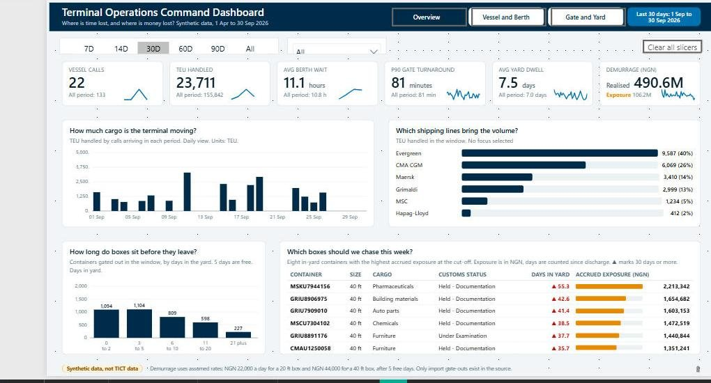
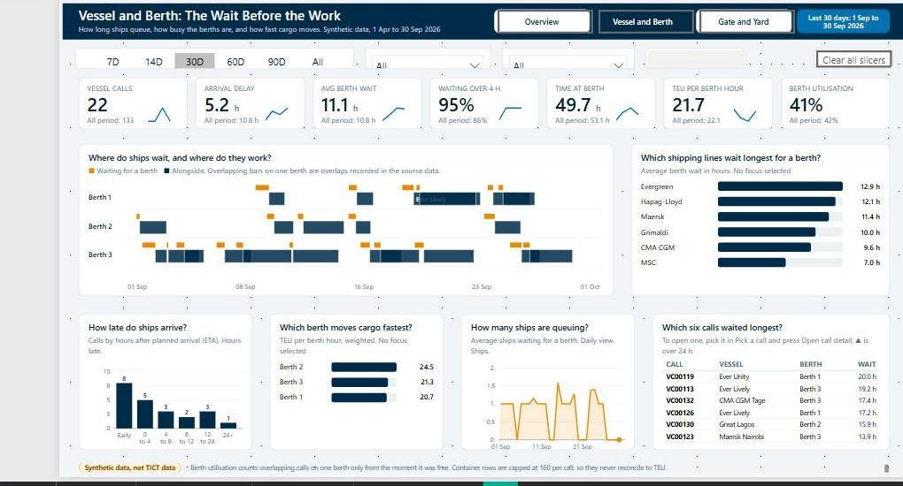
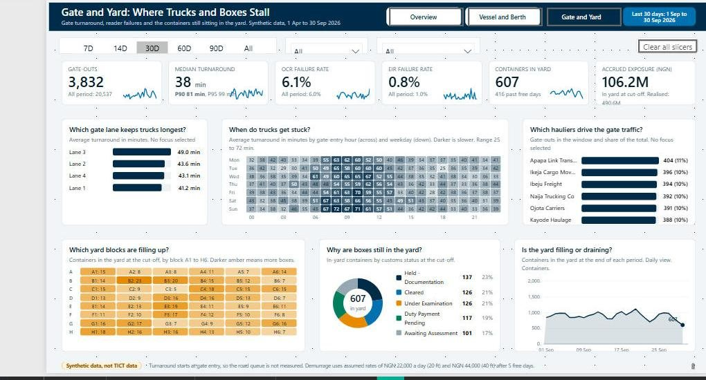
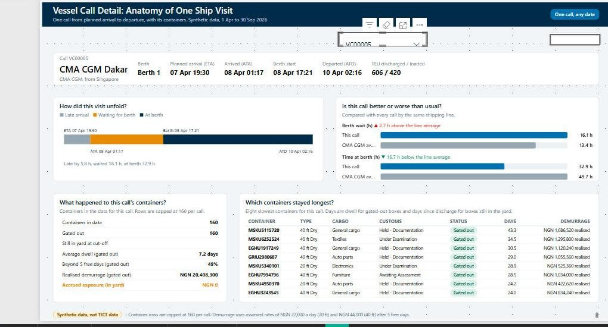
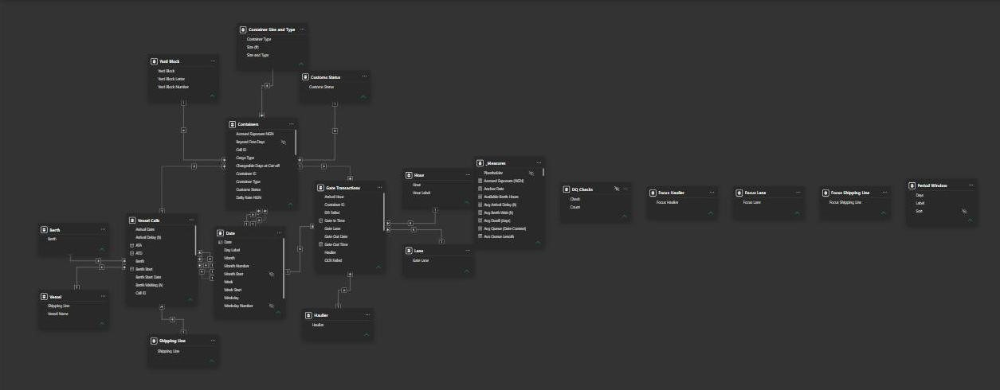

Project 1
Operations Command Dashboard
Power BIDAXPower Query
A multi-page Power BI report that gives an operations manager one place to see where time and money are being lost.
The problem
Performance information sat in separate files, so nobody could see the whole picture quickly. Delays and growing charges were noticed late, after the answer had already been put together by hand.
What it shows
- Where waiting time builds up and which partners drive it
- Which areas are holding items longest and costing the most
- Which few items deserve attention first each morning
What I built
- An overview page with headline cards, trends, a league table and the items most worth chasing
- Pages that break delays down by partner, location and time of day
- A detail page that opens a single job and compares it with the average
- Time window controls and filters so each manager can focus on their own area
- Every figure checked against a separate calculation outside Power BI
Screenshots




